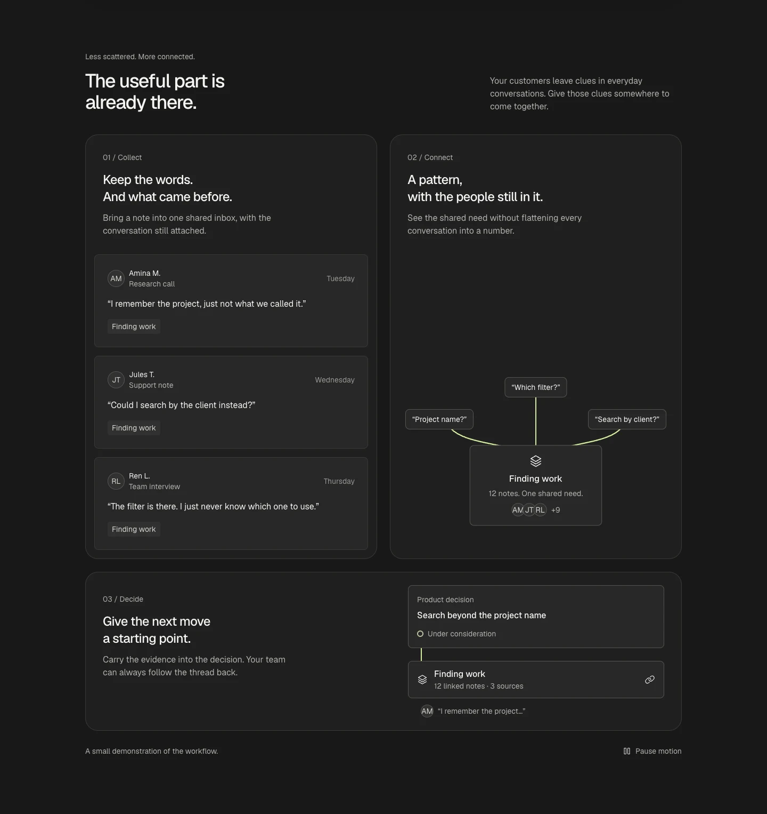
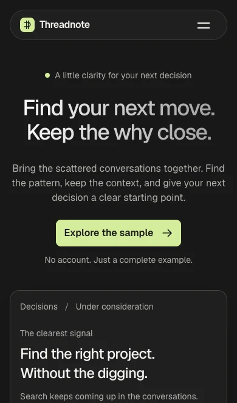

動起來的，
是產品的意思
暫定視覺處理叫 charcoal signal：深炭色表面、Geist 字體、少量萊姆色標示主要動作與選中路徑。產品介面是畫面主體；不靠客戶標誌、見證或成長數字當作證據。
首屏產品框只做一次載入進場。下方三個功能展示各說一件事：新訊息進入收集區、片段聚成共同需求、決策連回來源。動畫的目的是讓讀者看見關係。
網站情境也決定交付方式：文字留在 HTML，表面與圖示使用本機資產。試用區和問答維持穩定的操作介面，展示動畫另有暫停與減少動態的檢查項目。


從第一則訊息，到有依據的決定
產品頁的章節沿著這條線前進：主張與示例入口 → 三個功能展示 → 三個使用步驟 → 可追溯的示例決策 → 常見問題 → 再次開啟示例。
手機版要保留相同的閱讀與操作順序，讓讀者先知道這個產品幫什麼忙，再決定要不要試。桌機的大型產品框在窄螢幕需要重新排列，不能只把整張畫面縮小。
所有來源名稱只用來說明上下文。示例沒有連接 Slack、客服工具或其他外部服務。

